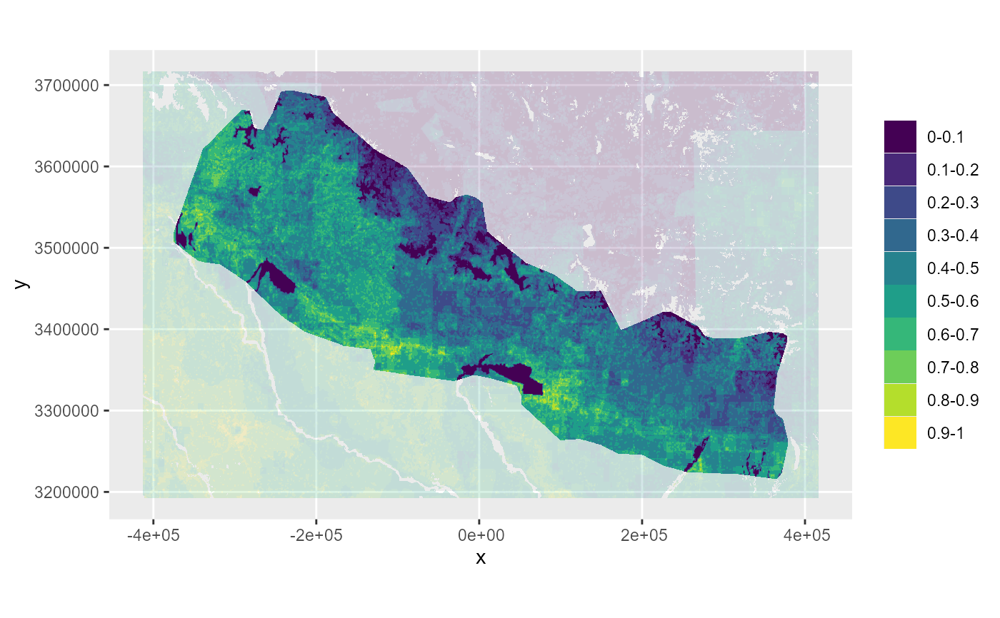

Function to create a static plot from raster data with discrete data
elsar_plot_static_raster_d.Rdelsar_plot_static_raster_d() allows to plot discrete data from a SpatRaster in ggplot or tmap. It can be combined with elsar_plot_optics() and elsar_plot_extra_data() to create reproducible plots.
Usage
elsar_plot_static_raster_d(
raster_in,
type = "ggplot_vector",
categorical = FALSE,
number_categories = 10,
data_layer = NULL,
background = NULL,
extend_background = 0.05,
custom_palette = NULL,
plot_title = "",
legend_title = NULL,
color_map = "viridis",
expand_plot = FALSE,
raster_df_out = FALSE
)Arguments
- raster_in
The
SpatRasterfile to be plotted.- type
A character of the plot type. Either "ggplot_vector", "ggplot_raster" or "tmap".
- categorical
logical. if data is categorical (TRUE), convert to factor (if not yet) and use the number of categories given.
- number_categories
If data does not have pre-defined categories, how many categories to split the continuous data into
- data_layer
A character of the data layer used.
- background
Requires a
SpatRasterinput (preferably with the same data asraster_in) to plot the background data.- extend_background
A numerical value that allows to extent the background beyond the extent of
raster_in. If extend_background <= 1, the lat and lon extend will be extended by the ratio provided (e.g. 0.05 will extend it by 5%). If extend_background > 1 all sides will be extended by the absolute value provided.- custom_palette
An optional custom palette for plotting. Default uses the
viridispackage.- plot_title
An optional plot title.
- legend_title
An optional legend title.
- color_map
The name of the
viridispalette to be used. Default is "viridis".- expand_plot
logical. Whether to expand the plot, so there is not space betwen border and plot.
- raster_df_out
logical. Whether to return only the plot (FALSE) or also the data frame behind the plot (TRUE). Needed for
elsar_plot_distribution()
Examples
boundary_proj <- make_boundary(
boundary_in = boundary_dat,
iso3 = "NPL",
iso3_column = "iso3cd",
do_project = TRUE
)
pus <- make_planning_units(
boundary_proj = boundary_proj,
pu_size = NULL,
pu_threshold = 8.5e5,
limit_to_mainland = FALSE
)
#> [1] "The current number of planning units is: 3743382"
#> [1] "The current number of planning units is: 2396805"
#> [1] "The current number of planning units is: 1665187"
#> [1] "The current number of planning units is: 1223941"
#> [1] "The current number of planning units is: 741036"
wad_dat <- get_wad_data()
wadOut <- make_normalised_raster(
raster_in = wad_dat,
pus = pus,
iso3 = "NPL"
)
(plot_cat <- elsar_plot_static_raster_d(raster_in = wadOut,
type = "ggplot_raster",
categorical = FALSE,
number_categories = 10,
background = wad_dat,
data_layer = "wad_final_cog",
raster_df_out = TRUE)
)
#> Plotting input data that is continuous and will be split into categories.
#> Adding background layer.
#> Extend based on ratio.
#> [[1]]

#>
#> [[2]]
#> x y wad_final_cog category interval
#> 1982 -238377.9 3692609 0.2743106 3 0.2-0.3
#> 1983 -237927.9 3692609 0.2741300 3 0.2-0.3
#> 1984 -237477.9 3692609 0.2746520 3 0.2-0.3
#> 1985 -237027.9 3692609 0.2760400 3 0.2-0.3
#> 1986 -236577.9 3692609 0.2798479 3 0.2-0.3
#> 1987 -236127.9 3692609 0.3021223 4 0.3-0.4
#> 1988 -235677.9 3692609 0.3471255 4 0.3-0.4
#> 1989 -235227.9 3692609 0.3642718 4 0.3-0.4
#> 1990 -234777.9 3692609 0.3652682 4 0.3-0.4
#> 1991 -234327.9 3692609 0.3654498 4 0.3-0.4
#> 1992 -233877.9 3692609 0.3654498 4 0.3-0.4
#> 1993 -233427.9 3692609 0.3654498 4 0.3-0.4
#> 1994 -232977.9 3692609 0.3654498 4 0.3-0.4
#> 1995 -232527.9 3692609 0.3654498 4 0.3-0.4
#> 1996 -232077.9 3692609 0.3653517 4 0.3-0.4
#> 1997 -231627.9 3692609 0.3650877 4 0.3-0.4
#> 1998 -231177.9 3692609 0.3648226 4 0.3-0.4
#> 1999 -230727.9 3692609 0.3645566 4 0.3-0.4
#> 2000 -230277.9 3692609 0.3644838 4 0.3-0.4
#> 2001 -229827.9 3692609 0.3644784 4 0.3-0.4
#> 2002 -229377.9 3692609 0.3321297 4 0.3-0.4
#> 2003 -228927.9 3692609 0.2994577 3 0.2-0.3
#> 2004 -228477.9 3692609 0.2848351 3 0.2-0.3
#> 2005 -228027.9 3692609 0.2744634 3 0.2-0.3
#> 2006 -227577.9 3692609 0.2742159 3 0.2-0.3
#> 2007 -227127.9 3692609 0.2740874 3 0.2-0.3
#> 2008 -226677.9 3692609 0.2740874 3 0.2-0.3
#> 3654 -240627.9 3692159 0.3669740 4 0.3-0.4
#> 3655 -240177.9 3692159 0.3571062 4 0.3-0.4
#> 3656 -239727.9 3692159 0.3294999 4 0.3-0.4
#> 3657 -239277.9 3692159 0.3049538 4 0.3-0.4
#> 3658 -238827.9 3692159 0.2816619 3 0.2-0.3
#> 3659 -238377.9 3692159 0.2766991 3 0.2-0.3
#> 3660 -237927.9 3692159 0.2755964 3 0.2-0.3
#> 3661 -237477.9 3692159 0.2942293 3 0.2-0.3
#> 3662 -237027.9 3692159 0.3087669 4 0.3-0.4
#> 3663 -236577.9 3692159 0.3118591 4 0.3-0.4
#> 3664 -236127.9 3692159 0.3261880 4 0.3-0.4
#> 3665 -235677.9 3692159 0.3543471 4 0.3-0.4
#> 3666 -235227.9 3692159 0.3650467 4 0.3-0.4
#> 3667 -234777.9 3692159 0.3656243 4 0.3-0.4
#> 3668 -234327.9 3692159 0.3655576 4 0.3-0.4
#> 3669 -233877.9 3692159 0.3653474 4 0.3-0.4
#> 3670 -233427.9 3692159 0.3652068 4 0.3-0.4
#> 3671 -232977.9 3692159 0.3650920 4 0.3-0.4
#> 3672 -232527.9 3692159 0.3650891 4 0.3-0.4
#> 3673 -232077.9 3692159 0.3615313 4 0.3-0.4
#> 3674 -231627.9 3692159 0.3519723 4 0.3-0.4
#> 3675 -231177.9 3692159 0.3427054 4 0.3-0.4
#> 3676 -230727.9 3692159 0.3336711 4 0.3-0.4
#> 3677 -230277.9 3692159 0.3312616 4 0.3-0.4
#> 3678 -229827.9 3692159 0.3311619 4 0.3-0.4
#> 3679 -229377.9 3692159 0.3107899 4 0.3-0.4
#> 3680 -228927.9 3692159 0.2902163 3 0.2-0.3
#> 3681 -228477.9 3692159 0.2809619 3 0.2-0.3
#> 3682 -228027.9 3692159 0.2743862 3 0.2-0.3
#> 3683 -227577.9 3692159 0.2741903 3 0.2-0.3
#> 3684 -227127.9 3692159 0.2740882 3 0.2-0.3
#> 3685 -226677.9 3692159 0.2740876 3 0.2-0.3
#> 3686 -226227.9 3692159 0.2740874 3 0.2-0.3
#> 3687 -225777.9 3692159 0.2740874 3 0.2-0.3
#> 3688 -225327.9 3692159 0.2740874 3 0.2-0.3
#> 3689 -224877.9 3692159 0.2740874 3 0.2-0.3
#> 3690 -224427.9 3692159 0.2740874 3 0.2-0.3
#> 5326 -242877.9 3691709 0.2873936 3 0.2-0.3
#> 5327 -242427.9 3691709 0.2601392 3 0.2-0.3
#> 5328 -241977.9 3691709 0.2410925 3 0.2-0.3
#> 5329 -241527.9 3691709 0.2659602 3 0.2-0.3
#> 5330 -241077.9 3691709 0.2950844 3 0.2-0.3
#> 5331 -240627.9 3691709 0.3324788 4 0.3-0.4
#> 5332 -240177.9 3691709 0.3497859 4 0.3-0.4
#> 5333 -239727.9 3691709 0.3488856 4 0.3-0.4
#> 5334 -239277.9 3691709 0.3234059 4 0.3-0.4
#> 5335 -238827.9 3691709 0.2878521 3 0.2-0.3
#> 5336 -238377.9 3691709 0.2792012 3 0.2-0.3
#> 5337 -237927.9 3691709 0.2771517 3 0.2-0.3
#> 5338 -237477.9 3691709 0.3150102 4 0.3-0.4
#> 5339 -237027.9 3691709 0.3438226 4 0.3-0.4
#> 5340 -236577.9 3691709 0.3473537 4 0.3-0.4
#> 5341 -236127.9 3691709 0.3539440 4 0.3-0.4
#> 5342 -235677.9 3691709 0.3642995 4 0.3-0.4
#> 5343 -235227.9 3691709 0.3679870 4 0.3-0.4
#> 5344 -234777.9 3691709 0.3678087 4 0.3-0.4
#> 5345 -234327.9 3691709 0.3663174 4 0.3-0.4
#> 5346 -233877.9 3691709 0.3645351 4 0.3-0.4
#> 5347 -233427.9 3691709 0.3633788 4 0.3-0.4
#> 5348 -232977.9 3691709 0.3624361 4 0.3-0.4
#> 5349 -232527.9 3691709 0.3624202 4 0.3-0.4
#> 5350 -232077.9 3691709 0.3554261 4 0.3-0.4
#> 5351 -231627.9 3691709 0.3366509 4 0.3-0.4
#> 5352 -231177.9 3691709 0.3188896 4 0.3-0.4
#> 5353 -230727.9 3691709 0.3019356 4 0.3-0.4
#> 5354 -230277.9 3691709 0.2977916 3 0.2-0.3
#> 5355 -229827.9 3691709 0.2981137 3 0.2-0.3
#> 5356 -229377.9 3691709 0.2904909 3 0.2-0.3
#> 5357 -228927.9 3691709 0.2826418 3 0.2-0.3
#> 5358 -228477.9 3691709 0.2780505 3 0.2-0.3
#> 5359 -228027.9 3691709 0.2746994 3 0.2-0.3
#> 5360 -227577.9 3691709 0.2743022 3 0.2-0.3
#> 5361 -227127.9 3691709 0.2740935 3 0.2-0.3
#> 5362 -226677.9 3691709 0.2740889 3 0.2-0.3
#> 5363 -226227.9 3691709 0.2740874 3 0.2-0.3
#> 5364 -225777.9 3691709 0.2740874 3 0.2-0.3
#> 5365 -225327.9 3691709 0.2740874 3 0.2-0.3
#> 5366 -224877.9 3691709 0.2740874 3 0.2-0.3
#> 5367 -224427.9 3691709 0.2740874 3 0.2-0.3
#> 5368 -223977.9 3691709 0.2740874 3 0.2-0.3
#> 5369 -223527.9 3691709 0.2740874 3 0.2-0.3
#> 5370 -223077.9 3691709 0.2740874 3 0.2-0.3
#> 5371 -222627.9 3691709 0.2740874 3 0.2-0.3
#> 5372 -222177.9 3691709 0.2740874 3 0.2-0.3
#> 7001 -243777.9 3691259 0.3325951 4 0.3-0.4
#> 7002 -243327.9 3691259 0.3100144 4 0.3-0.4
#> 7003 -242877.9 3691259 0.2899381 3 0.2-0.3
#> 7004 -242427.9 3691259 0.2563375 3 0.2-0.3
#> 7005 -241977.9 3691259 0.2286321 3 0.2-0.3
#> 7006 -241527.9 3691259 0.2353061 3 0.2-0.3
#> 7007 -241077.9 3691259 0.2577829 3 0.2-0.3
#> 7008 -240627.9 3691259 0.3109630 4 0.3-0.4
#> 7009 -240177.9 3691259 0.3424255 4 0.3-0.4
#> 7010 -239727.9 3691259 0.3542031 4 0.3-0.4
#> 7011 -239277.9 3691259 0.3292653 4 0.3-0.4
#> 7012 -238827.9 3691259 0.2892794 3 0.2-0.3
#> 7013 -238377.9 3691259 0.2796860 3 0.2-0.3
#> 7014 -237927.9 3691259 0.2776933 3 0.2-0.3
#> 7015 -237477.9 3691259 0.3224568 4 0.3-0.4
#> 7016 -237027.9 3691259 0.3603223 4 0.3-0.4
#> 7017 -236577.9 3691259 0.3789097 4 0.3-0.4
#> 7018 -236127.9 3691259 0.3913707 4 0.3-0.4
#> 7019 -235677.9 3691259 0.3962913 4 0.3-0.4
#> 7020 -235227.9 3691259 0.3953635 4 0.3-0.4
#> 7021 -234777.9 3691259 0.3910452 4 0.3-0.4
#> 7022 -234327.9 3691259 0.3746132 4 0.3-0.4
#> 7023 -233877.9 3691259 0.3554987 4 0.3-0.4
#> 7024 -233427.9 3691259 0.3432078 4 0.3-0.4
#> 7025 -232977.9 3691259 0.3331917 4 0.3-0.4
#> 7026 -232527.9 3691259 0.3330496 4 0.3-0.4
#> 7027 -232077.9 3691259 0.3277555 4 0.3-0.4
#> 7028 -231627.9 3691259 0.3137636 4 0.3-0.4
#> 7029 -231177.9 3691259 0.3061445 4 0.3-0.4
#> 7030 -230727.9 3691259 0.3035994 4 0.3-0.4
#> 7031 -230277.9 3691259 0.3081046 4 0.3-0.4
#> 7032 -229827.9 3691259 0.3150679 4 0.3-0.4
#> 7033 -229377.9 3691259 0.3124594 4 0.3-0.4
#> 7034 -228927.9 3691259 0.3077106 4 0.3-0.4
#> 7035 -228477.9 3691259 0.2919220 3 0.2-0.3
#> 7036 -228027.9 3691259 0.2797228 3 0.2-0.3
#> 7037 -227577.9 3691259 0.2760718 3 0.2-0.3
#> 7038 -227127.9 3691259 0.2741518 3 0.2-0.3
#> 7039 -226677.9 3691259 0.2741035 3 0.2-0.3
#> 7040 -226227.9 3691259 0.2740874 3 0.2-0.3
#> 7041 -225777.9 3691259 0.2740874 3 0.2-0.3
#> 7042 -225327.9 3691259 0.2740874 3 0.2-0.3
#> 7043 -224877.9 3691259 0.2740874 3 0.2-0.3
#> 7044 -224427.9 3691259 0.2740874 3 0.2-0.3
#> 7045 -223977.9 3691259 0.2740874 3 0.2-0.3
#> 7046 -223527.9 3691259 0.2740874 3 0.2-0.3
#> 7047 -223077.9 3691259 0.2740874 3 0.2-0.3
#> 7048 -222627.9 3691259 0.2740874 3 0.2-0.3
#> 7049 -222177.9 3691259 0.2740874 3 0.2-0.3
#> 7050 -221727.9 3691259 0.2740874 3 0.2-0.3
#> 7051 -221277.9 3691259 0.2740874 3 0.2-0.3
#> 7052 -220827.9 3691259 0.2740874 3 0.2-0.3
#> 7053 -220377.9 3691259 0.2961859 3 0.2-0.3
#> 7054 -219927.9 3691259 0.3190539 4 0.3-0.4
#> 7055 -219477.9 3691259 0.3407900 4 0.3-0.4
#> 8678 -243777.9 3690809 0.3124990 4 0.3-0.4
#> 8679 -243327.9 3690809 0.2989194 3 0.2-0.3
#> 8680 -242877.9 3690809 0.2893075 3 0.2-0.3
#> 8681 -242427.9 3690809 0.2541421 3 0.2-0.3
#> 8682 -241977.9 3690809 0.2226295 3 0.2-0.3
#> 8683 -241527.9 3690809 0.2152824 3 0.2-0.3
#> 8684 -241077.9 3690809 0.2313300 3 0.2-0.3
#> 8685 -240627.9 3690809 0.2928310 3 0.2-0.3
#> 8686 -240177.9 3690809 0.3326171 4 0.3-0.4
#> 8687 -239727.9 3690809 0.3527206 4 0.3-0.4
#> 8688 -239277.9 3690809 0.3297856 4 0.3-0.4
#> 8689 -238827.9 3690809 0.2892109 3 0.2-0.3
#> 8690 -238377.9 3690809 0.2796151 3 0.2-0.3
#> 8691 -237927.9 3690809 0.2778580 3 0.2-0.3
#> 8692 -237477.9 3690809 0.3248278 4 0.3-0.4
#> 8693 -237027.9 3690809 0.3680131 4 0.3-0.4
#> 8694 -236577.9 3690809 0.4006222 5 0.4-0.5
#> 8695 -236127.9 3690809 0.4202592 5 0.4-0.5
#> 8696 -235677.9 3690809 0.4239301 5 0.4-0.5
#> 8697 -235227.9 3690809 0.4196468 5 0.4-0.5
#> 8698 -234777.9 3690809 0.4107522 5 0.4-0.5
#> 8699 -234327.9 3690809 0.3795308 4 0.3-0.4
#> 8700 -233877.9 3690809 0.3433766 4 0.3-0.4
#> 8701 -233427.9 3690809 0.3242289 4 0.3-0.4
#> 8702 -232977.9 3690809 0.3089703 4 0.3-0.4
#> 8703 -232527.9 3690809 0.3105928 4 0.3-0.4
#> 8704 -232077.9 3690809 0.3082969 4 0.3-0.4
#> 8705 -231627.9 3690809 0.2993858 3 0.2-0.3
#> 8706 -231177.9 3690809 0.3006503 4 0.3-0.4
#> 8707 -230727.9 3690809 0.3100165 4 0.3-0.4
#> 8708 -230277.9 3690809 0.3211413 4 0.3-0.4
#> 8709 -229827.9 3690809 0.3328794 4 0.3-0.4
#> 8710 -229377.9 3690809 0.3339319 4 0.3-0.4
#> 8711 -228927.9 3690809 0.3311764 4 0.3-0.4
#> [ reached 'max' / getOption("max.print") -- omitted 740820 rows ]
#>